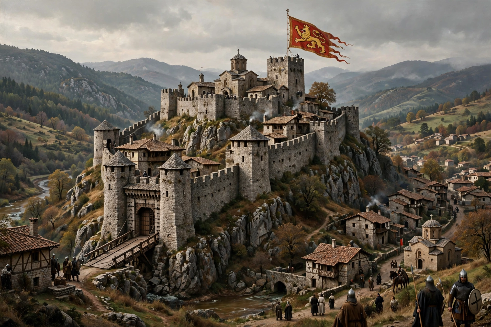

Asen dynasty
| House of Asen | |
|---|---|
 | |
| Country | Second Bulgarian Empire |
| Founded | 1185 |
| Founder | Ivan Asen I and Peter II |
| Final ruler | Mitso Asen (d. after 1277) |
| Titles | Emperor (Tsar) of the Bulgarians |
The Asen dynasty founded and ruled the Second Bulgarian Empire between 1185 and 1256, with members of the wider family remaining prominent into the 1280s. The dynasty began with the uprising of the brothers Ivan Asen and Theodore Peter against Byzantine rule in 1185, which restored Bulgarian statehood after more than a century and a half of Byzantine domination.
Origins
The family's origins are debated: sources describe the brothers as Bulgarian, Vlach, or Cuman in background, and the family's name may derive from the Turkic word esen, "safe and sound". The revolt began at Tarnovo after the brothers' request for a pronoia estate was refused by Emperor Isaac II Angelos, and was legitimised by the cult of St. Demetrius of Thessaloniki, whose icon was said to have come to Tarnovo.
Rulers
Ivan Asen I (r. 1189–1196) and Peter II (r. 1185–1197) were both assassinated, and their younger brother Kaloyan (r. 1197–1207) expanded the empire, defeated the crusader Latin Empire at Adrianople in 1205, capturing Emperor Baldwin I, and obtained a royal crown from Pope Innocent III. Under Ivan Asen II (r. 1218–1241) Bulgaria reached its medieval zenith: after the victory over Epirus at Klokotnitsa in 1230 the empire stretched between the Black, Aegean and Adriatic seas, and Tarnovo became a major cultural and religious centre. After his death the empire weakened under Mongol pressure; the line of direct Asenid rulers ended in 1256, though the usurper Mitso Asen held the throne briefly in 1256–1257.
Legacy
The Asenids are remembered as restorers of Bulgarian independence. Ivan Asen II's reign is commemorated in the inscription of the Holy Forty Martyrs Church in Veliko Tarnovo, and the dynasty's name survives in Bulgarian place names such as Asenovgrad.
See also
This article is a recreation written from memory for the muse-webcrawl project.